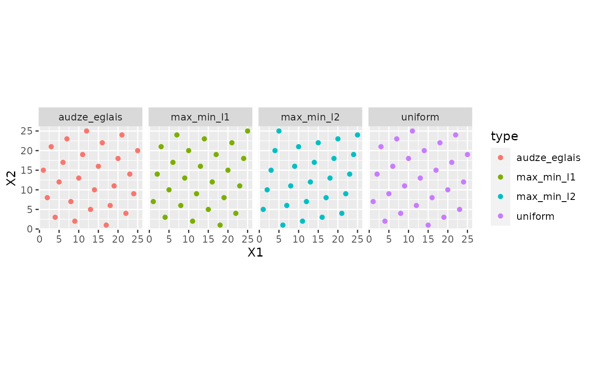

sfd_lib.RdThis data object is a list of designs originating from https://www.spacefillingdesigns.nl/. While the original website offers no guarantee or license, they do state that "All these designs have been compared and the best designs are collected on this website. They can be downloaded for free and used in your specific simulation environment".
https://www.spacefillingdesigns.nl/ Husslage, B. G., Rennen, G., Van Dam, E. R., & Den Hertog, D. (2011). Space-filling Latin hypercube designs for computer experiments. Optimization and Engineering, 12, 611-630.
a list of tibble
The available designs in this package are for experiments where the number of parameters ranges from two to ten of types "Audze-Eglais", "max_min_l1", or "max_min_l2". See Husslage et al (2011).
The format is a list with nine elements for dimensions of two to ten experimental factors/parameters. The designs are concatenated with columns of design type and number of points. The values are integers between one and the number of design points.
data(sfd_lib)
if (rlang::is_installed("ggplot2")) {
library(ggplot2)
two_params <- sfd_lib[[1]]
two_params <- two_params[two_params$num_points == 25,]
ggplot(two_params, aes(X1, X2, col = type)) +
geom_point() +
facet_wrap(~ type, nrow = 1) +
coord_equal()
}
